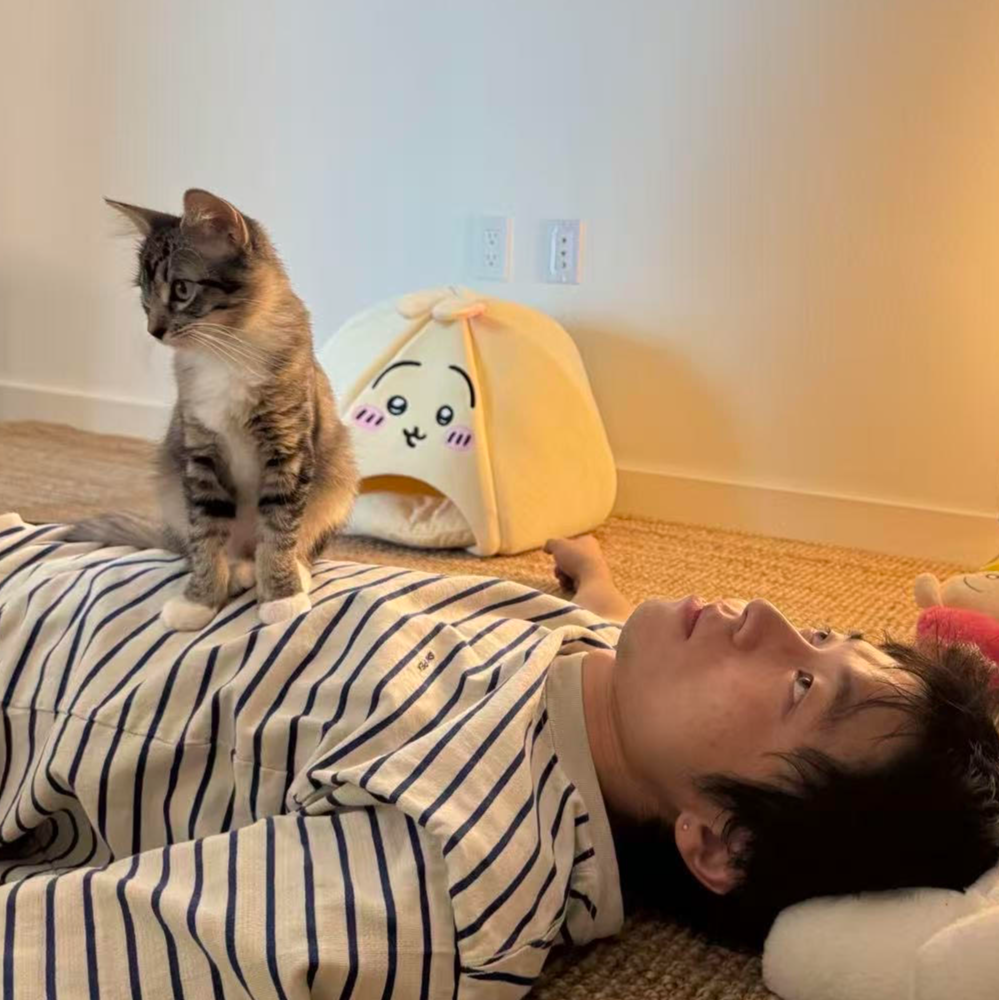

Hamilton-Jacobi Reachability for Hybrid Systems: Unified Goal-Driven Control with Safety Guarantees
The International Journal of Robotics Research · 2026
Javier Borquez, Shuang Peng, Somil Bansal
I'm currently a PhD student advised by Prof. Quan Nguyen at DRCL Lab, USC.
I'm broadly interested in control and safety assurance for legged robots. I also enjoy designing and building hardware.

The International Journal of Robotics Research · 2026
Javier Borquez, Shuang Peng, Somil Bansal
IEEE Transactions on Robotics · 2025
Albert Lin, Shuang Peng, Somil Bansal
RSS · 2024
Javier Borquez, Shuang Peng, Yiyu Chen, Quan Nguyen, Somil Bansal
IEEE Robotics and Automation Letters · 2023
Luiza Labazanova, Shuang Peng, Liuming Qiu, Hoi-Yin Lee, Thrishantha Nanayakkara, David Navarro-Alarcon
Haptics
An origami-inspired haptic glove that delivers linear force at the user's fingertip.
Quadruped · 12-DOF
A high-performance 12-DOF quadruped built from mostly 3D-printed parts.
Haptics · 3-DOF
A wearable haptic exoskeleton with a parallel 3-DOF translation mechanism at the user's fingertip.